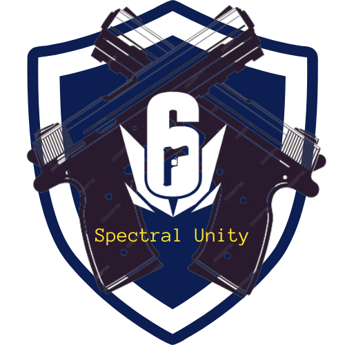
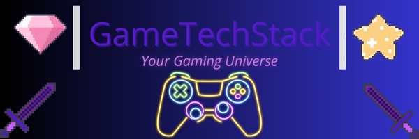
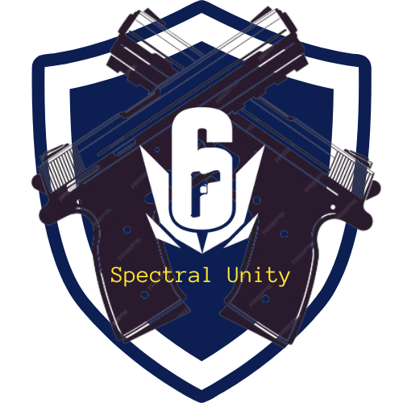
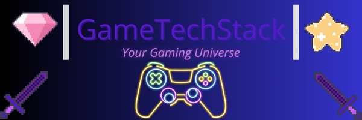
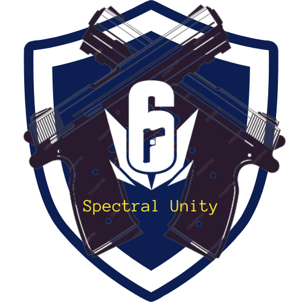
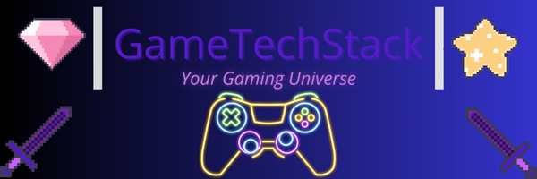
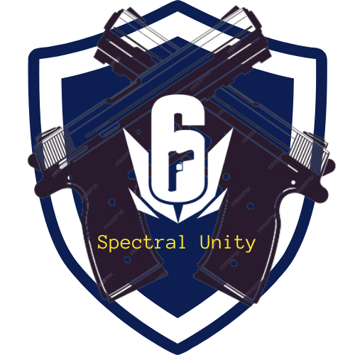
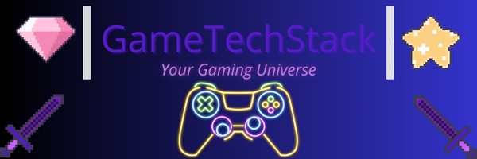

Le design UX/UI fait partie des premières compétences que j'ai acquises, et il a eu un impact considérable sur l'ensemble de mes projets. En effet, une interface utilisateur bien conçue est essentielle pour garantir une expérience fluide, intuitive et agréable. J'ai appris à concevoir des interfaces qui ne sont pas seulement esthétiques, mais qui répondent également aux besoins des utilisateurs, en favorisant la simplicité, la fluidité de navigation, et une grande accessibilité.
🎯 Cette approche m'a permis de perfectionner l'utilisation d'outils comme Adobe XD, Figma et Canva, qui ont été essentiels dans la création de maquettes interactives et de prototypes. Chaque projet sur lequel j'ai travaillé a renforcé ma compréhension de l'importance d'un design réfléchi, visant à améliorer la logique de navigation, la clarté des interfaces et la réactivité de l'application.
| 🔧 Outil | 📖 Description | 📚 Ce que j'ai appris |
|---|---|---|
| 🎨 Figma | Outil de design d'interface et de prototypage interactif. | J'ai appris à concevoir des prototypes cliquables et interactifs, facilitant les tests utilisateurs et les retours rapides. |
| 📐 Adobe XD | Outil de création de wireframes et de prototypes dynamiques. | J'ai maîtrisé l'utilisation d'Adobe XD pour créer des maquettes précises et des prototypes fonctionnels. |
| 🖼️ Canva | Outil en ligne pour la création de visuels et d'illustrations. | J'ai utilisé Canva pour créer des visuels attractifs et adaptés à la charte graphique du projet. |
| ⚙️ Sketch | Outil de design vectoriel pour l'UI Design. | J'ai appris à concevoir des interfaces vectorielles, optimisées pour tous les types d'écrans. |
Ces règles font partie de ce que j'ai appris et retenu au cours de mes 3 années de formation :